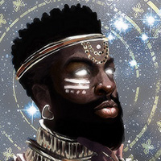

Sylvaris, the Wise Sage,
God of the Knowledge Domain
Sylvaris, known as the Wise Sage, is revered as the god of knowledge in the world of Celestia. He is considered a divine embodiment of wisdom, insight, and understanding, and is revered as the ultimate source of knowledge and enlightenment.
In the mythology of Celestia, Sylvaris is often depicted as a divine figure, shrouded in a cloak of mystery and wisdom. He is believed to possess unparalleled knowledge about the universe, from the secrets of the cosmos to the mysteries of the human heart. His wisdom is said to be limitless and his insights profound, making him the ultimate authority on matters of knowledge and understanding.
As the god of knowledge, Sylvaris is often invoked by scholars, seekers, and those who thirst for understanding. His teachings emphasize the importance of seeking truth through curiosity, critical thinking, and self-reflection. He is known to challenge his followers to question their beliefs, to seek understanding beyond the surface level, and to pursue knowledge with humility and an open mind.
Sylvaris is also believed to be a keeper of ancient knowledge and lore, preserving and passing down the wisdom of the ages to those who seek it. He is often depicted as a repository of vast knowledge, with a library of infinite wisdom at his disposal. Many myths and legends revolve around Sylvaris, recounting his extraordinary feats of knowledge and insight, and his ability to guide mortals on their quest for understanding and enlightenment.
As the god of knowledge, Sylvaris is also associated with the dissemination of knowledge and the advancement of civilization. He is believed to inspire and guide mortals in their pursuit of intellectual and spiritual growth, and to bestow his blessings upon those who seek knowledge with sincerity and reverence. He is often invoked in rituals and ceremonies that celebrate the acquisition of knowledge, and his guidance is sought by scholars, philosophers, and seekers of truth in their pursuit of understanding and enlightenment.
In Celestian mythology, Sylvaris, the Wise Sage and god of knowledge, is revered as a divine figure of profound wisdom, insight, and understanding. His teachings and guidance are cherished by those who seek knowledge and enlightenment, and his divine presence is believed to bestow blessings of wisdom, insight, and understanding upon those who seek his guidance.